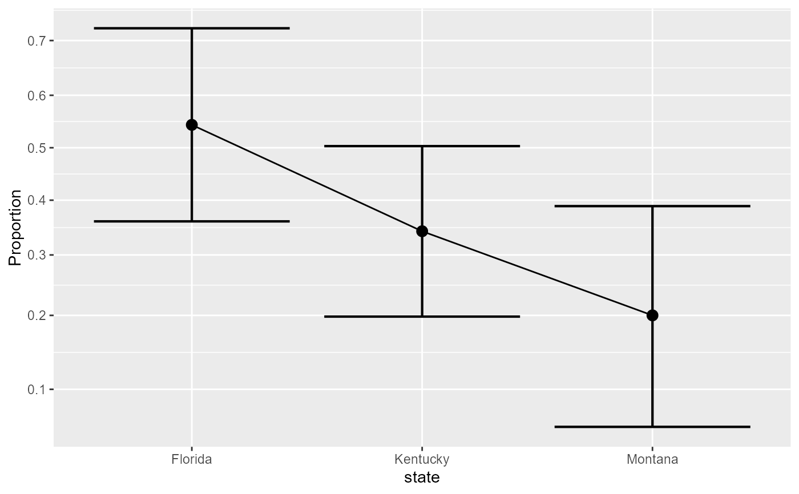

The function 'anopa()' performs an ANOPA for designs with up to 4 factors according to the 'ANOPA' framework. See Laurencelle and Cousineau (2023) for more.
anopa(formula = NULL, data = NULL, WSFactors = NULL)A formula with the factors on the left-hand side. See below for writing the formula to match the data format.
Dataframe in one of wide, long, or compiled format;
For within-subjet designs, provide the factor names and their number of levels. This is expressed as a vector of strings such as "Moment(2)".
An omnibus analyses of the given proportions. Each factor's significance is
assessed, as well as their interactions when there is more than one factor. For
decomposition of the main analyses, follow the analysis with emProportions(),
contrastProportions(), or posthocProportions())
Note the following limitations:
The main analysis performed by anopa() is currently restricted to four
factors in total (between and/or within). Contact the author if you plan to analyse
more complex designs.
If you have repeated-measure design, the data must be provided in wide or long format. The correlation between successes cannot be assessed once the data are in a compiled format.
The data can be given in three formats:
wide: In the wide format, there is one line for each participant, and
one column for each between-subject factors in the design. In the column(s), the level
of the factor is given (as a number, a string, or a factor). For within-subject
factors, the columns contains 0 or 1 based on the status of the measurement.
long: In the long format, there is an identifier column for each participant,
a factor column and a level number for that factor. If there are n participants
and m factors, there will be in total n x m lines.
compiled: In the compiled format, there are as many lines as there are cells in the
design. If there are two factors, with two levels each, there will be 4 lines.
See the vignette DataFormatsForProportions
for more on data format and how to write their formula.
Laurencelle L, Cousineau D (2023). “Analysis of proportions using arcsine transform with any experimental design.” Frontiers in Psychology, 13, 1045436. doi:10.3389/fpsyg.2022.1045436 .
# -- FIRST EXAMPLE --
# Basic example using a single between-subject factor design with the data in compiled format.
# Ficticious data present success (1) or failure (0) of the observation according
# to the state of residency (three levels: Florida, Kentucky or Montana) for
# 3 possible cells. There are 175 observations (with unequal n, Montana having only)
# 45 observations).
minimalBSExample
#> state s n
#> 1 Florida 31 57
#> 2 Kentucky 25 73
#> 3 Montana 9 45
# The data are in compiled format, consequently the data frame has only three lines.
# The complete data frame in wide format would be composed of 175 lines, one per participant.
# The following formula using curly braces is describing this data format
# (note the semicolon to separate the number of successes from the number of observations):
formula <- {s; n} ~ state
# The analysis is performed using the function `anopa()` with a formula and data:
w <- anopa(formula, minimalBSExample)
summary(w)
#> MS df F p correction Fcorr pvalcorr
#> state 0.032384 2 7.335621 0.000652 1.011881 7.24949 0.000711
#> Error 0.004415 Inf
# As seen, the proportions of success do not differ across states.
# To see the proportions when the data is in compiled format, simply divide the
# number of success (s) by the total number of observations (n):
minimalBSExample$s / minimalBSExample$n
#> [1] 0.5438596 0.3424658 0.2000000
# A plot of the proportions with error bars (default 95% confidence intervals) is
# easily obtained with
anopaPlot(w)

# The data can be re-formated into different formats with,
# e.g., `toRaw()`, `toLong()`, `toWide()`
head(toWide(w))
#> state s
#> 1 Florida 1
#> 2 Florida 1
#> 3 Florida 1
#> 4 Florida 1
#> 5 Florida 1
#> 6 Florida 1
# In this format, only 1s and 0s are shown, one participant per line.
# See the vignette `DataFormatsForFrequencies` for more.
# -- SECOND EXAMPLE --
# Real-data example using a three-factor design with the data in compiled format:
ArringtonEtAl2002
#> Location Trophism Diel s n
#> 1 Africa Detritivore Diurnal 16 217
#> 2 Africa Invertivore Diurnal 76 498
#> 3 Africa Invertivore Nocturnal 55 430
#> 4 Africa Omnivore Diurnal 2 87
#> 5 Africa Piscivore Diurnal 673 989
#> 6 Africa Piscivore Nocturnal 221 525
#> 7 Central/South America Detritivore Diurnal 68 1589
#> 8 Central/South America Detritivore Nocturnal 9 318
#> 9 Central/South America Invertivore Diurnal 706 7452
#> 10 Central/South America Invertivore Nocturnal 486 2101
#> 11 Central/South America Omnivore Diurnal 293 6496
#> 12 Central/South America Omnivore Nocturnal 82 203
#> 13 Central/South America Piscivore Diurnal 1275 5226
#> 14 Central/South America Piscivore Nocturnal 109 824
#> 15 North America Detritivore Diurnal 142 1741
#> 16 North America Invertivore Diurnal 525 3368
#> 17 North America Invertivore Nocturnal 231 1539
#> 18 North America Omnivore Diurnal 210 1843
#> 19 North America Omnivore Nocturnal 7 38
#> 20 North America Piscivore Diurnal 536 1289
#> 21 North America Piscivore Nocturnal 19 102
# This dataset, shown in compiled format, has three cells missing
# (e.g., fishes whose location is African, are Detrivore, feeding Nocturnally)
w <- anopa( {s;n} ~ Location * Trophism * Diel, ArringtonEtAl2002 )
#> ANOPA::fyi(1): Combination of cells missing. Adding:
#> Location Trophism Diel s n
#> Africa Detritivore Nocturnal 0 0
#> Africa Omnivore Nocturnal 0 0
#> North America Detritivore Nocturnal 0 0
#> Warning: ANOPA::warning(1): Some cells have zero over zero data. Imputing...
# The function `anopa()` generates the missing cells with 0 success over 0 observations.
# Afterwards, cells with missing values are imputed based on the option:
getOption("ANOPA.zeros")
#> [1] 0.05 1.00
# where 0.05 is 1/20 of a success over one observations (arcsine transforms allows
# fractions of success; it remains to be studied what imputation strategy is best...)
# The analysis suggests a main effect of Trophism (type of food ingested)
# but the interaction Trophism by Diel (moment of feeding) is not to be neglected...
summary(w) # or summarize(w)
#> MS df F pvalue correction Fcorr
#> Location 0.027449 2 0.961802 0.382203 1.000112 0.961694
#> Trophism 0.095656 3 3.351781 0.018102 1.000115 3.351396
#> Diel 0.029715 1 1.041227 0.307536 1.000049 1.041176
#> Location:Trophism 0.029485 6 1.033146 0.401285 1.013842 1.019041
#> Location:Diel 0.005277 2 0.184900 0.831187 1.010164 0.183040
#> Trophism:Diel 0.073769 3 2.584868 0.051365 1.012197 2.553721
#> Location:Trophism:Diel 0.011297 6 0.395837 0.882184 1.055660 0.374967
#> Error(between) 0.028539 Inf
#> pvalcorr
#> Location 0.382245
#> Trophism 0.018111
#> Diel 0.307548
#> Location:Trophism 0.410515
#> Location:Diel 0.832735
#> Trophism:Diel 0.053559
#> Location:Trophism:Diel 0.895351
#> Error(between)
# The above presents both the uncorrected statistics as well as the corrected
# ones for small samples [@w76]. You can obtain only the uncorrected...
uncorrected(w)
#> MS df F pvalue
#> Location 0.027449 2 0.961802 0.382203
#> Trophism 0.095656 3 3.351781 0.018102
#> Diel 0.029715 1 1.041227 0.307536
#> Location:Trophism 0.029485 6 1.033146 0.401285
#> Location:Diel 0.005277 2 0.184900 0.831187
#> Trophism:Diel 0.073769 3 2.584868 0.051365
#> Location:Trophism:Diel 0.011297 6 0.395837 0.882184
#> Error(between) 0.028539 Inf
#... or the corrected ones
corrected(w)
#> MS df F correction Fcorr pvalcorr
#> Location 0.027449 2 0.961802 1.000112 0.961694 0.382245
#> Trophism 0.095656 3 3.351781 1.000115 3.351396 0.018111
#> Diel 0.029715 1 1.041227 1.000049 1.041176 0.307548
#> Location:Trophism 0.029485 6 1.033146 1.013842 1.019041 0.410515
#> Location:Diel 0.005277 2 0.184900 1.010164 0.183040 0.832735
#> Trophism:Diel 0.073769 3 2.584868 1.012197 2.553721 0.053559
#> Location:Trophism:Diel 0.011297 6 0.395837 1.055660 0.374967 0.895351
#> Error(between) 0.028539 Inf
# You can also ask easier outputs with:
explain(w) # human-readable ouptut NOT YET DONE
#> [1] "method explain not yet done..."